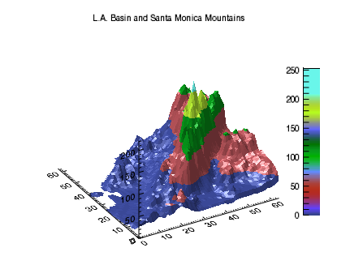

You can add a colorbar to a graphic. Colorbars show the minimum to maximum pixel values on a color scale.
The example shows a digital elevation model (DEM) taken from the Santa Monica mountains in California. The colors in the graphic are determined by the RGB_TABLE, which the COLORBAR function uses to create the color scale.

; Define the data
file = file_which('elevbin.dat')
dem = read_binary(file, data_dims=[64,64])
; Display the data.
c1 = CONTOUR(dem, $
RGB_TABLE=30, $
/FILL, $
PLANAR=0, $
VIEW_TITLE='L.A. Basin and Santa Monica Mountains')
; Add the colorbar.
cbar = COLORBAR(ORIENTATION=1, $
POSITION=[0.90, 0.2, 0.95, 0.75])
| • | RGB_TABLE - defines the color table used to display the image. Colorbar uses the colors defined in this property. |
| • | FILL - specifies that the contour is filled. This keyword uses the colors defined in RGB_TABLE. |
| • | PLANAR - PLANAR = 0 displays the graphic in three-dimensional space rather than on a plane. The default is PLANAR=1, which displays a graphic on a plane. |
| • | VIEW_TITLE - defines the title of the view rather than the graphic. |
| • | ORIENTATION - ORIENTATION =1 defines a vertical colorbar direction. The default orientation is 0, which is horizontal. |
| • | POSITION - defines the location of the colorbar in a four-element vector: [X1, Y1, X2, Y2], defining the lower left and upper right corners of the image portion of the colorbar. |
| • | Graphics Examples |
| • | Graphics annotations |
| • | IDL Graphics Functions |
| • | Change Graphics Properties |
| • | Multiple Graphics in One Window |
| • | Saving Graphics |
| • | Formatting IDL Graphics Symbols and Lines |